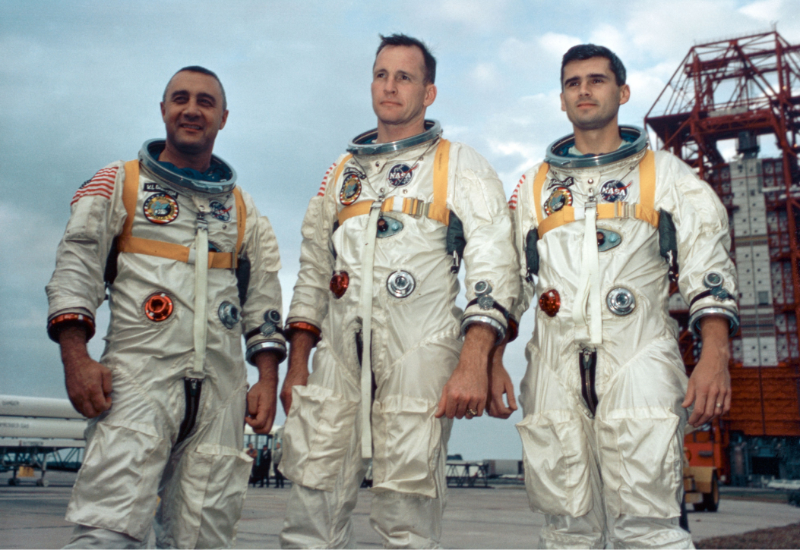

Apollo 11 was the spaceflight that first landed humans on the Moon. Commander Neil Armstrong and lunar module pilot Buzz Aldrin formed the American crew that landed the Apollo Lunar Module Eagle on July 20, 1969, at 20:17 UTC. Armstrong became the first person to step onto the lunar surface six hours and 39 minutes later on July 21 at 02:56 UTC; Aldrin joined him 19 minutes later.